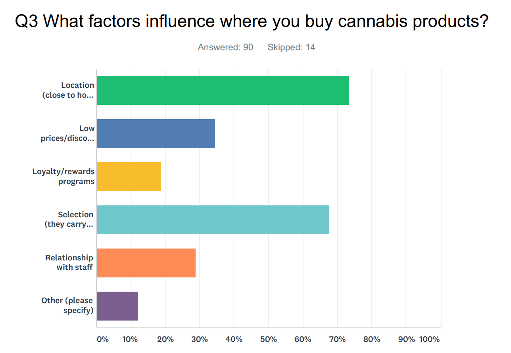

Greenbits Personas, 2018
Skills
- Survey creation
- User interviews
- Contextual research
- Print design
Tools
- Google Forms
- Survey Monkey
- Sketch
- Keynote
Artifacts
- Logos
- Confluence wiki page
- Printed “trading cards”
- New hire presentation
Problem
I joined Green Bits knowing almost nothing about our industry, cannabis retail. In order to better understand our customers and their needs, I decided to create research-based personas to replace the proto-personas already in place. Additionally, we were quickly hiring and onboarding new employees who were similarly unfamiliar with the cannabis industry, and we needed a way to get everyone up to speed and start building empathy for our customers.
Solution
After performing some initial research, I created a survey using Google Forms and used Intercom to message relevant customers. The survey used primarily free text questions and focused on identifying the responsibilities, goals, pain points, and workarounds of different roles related to store operation. I used logic branches to explore areas unique to specific people, such as store owners (as opposed to employees) and included an opt-in for further contact. I followed up via email to schedule phone interviews with interested participants, and conducted directed interviews with twelve customers.
I gathered the results in a spreadsheet and quantified the responses to identify significant characteristics, such as which roles were responsible for legal compliance, and what motivated store owners to start their business.
27% of store owners mentioned money or profit as their motivation, 42% wrote of wanting to help their communities.
While I was working on creating personas for store owners and employees, another team was starting work on a consumer-facing feature and lacked research into what our customers’ customers were looking for.
Inspired by the success I’d had with my current survey project, I created a more quantitative survey using SurveyMonkey to better understand how cannabis store consumers use online menus, ordering systems, and loyalty programs. Filtering by characteristics such as frequency of purchases and other shopping behavior, I was able to not only provide answers to the consumer-facing teams questions, but also start to create personas for the retail shopper.

Result
While sharing the personas - including quotes and details of how each role interacts with Green Bits - on the company Confluence wiki was helpful, I also wanted a tangible artifact to share with current and future coworkers. I liked the idea of “trading cards” - double-sided postcards with photos, quotes, and characteristics of each persona that we could reference and use regularly.
I worked with our visual designer to source photos from Unsplash, and I designed the template for our persona cards, created them all in Sketch, and had them printed. These now live in our conference rooms, where they’re used informally in project planning meetings, and as part of our monthly new hire onboarding process where I lead a session on personas.